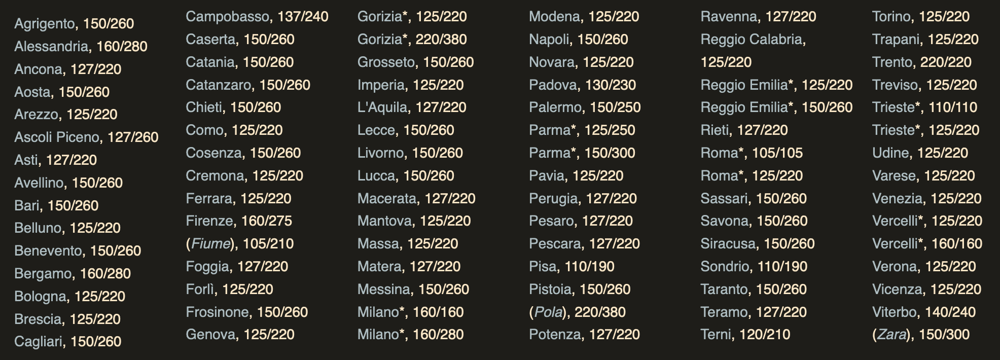

History of the Italian electrical system
(I'm looking for more information about this stuff! If you happen to know more about this please get in touch with me!)
Introduction
Nowadays it is fairly well known, especially to the people interested in tech like myself, that there are,
substantially, two types of electrical systems in the world: North and Central America (alongside some other places)
use 120V, whereas Europe and most other countries use 230V.
However, what if I told you that, decades ago, Italy used to use 120V as well?
Yeah! It’s weird! And the traces left behind by that era are still present in modern Italian electricals as well.
So, let’s begin this story by taking a brief look at the beginning of the widespread use of electricity over here...
The beginning
I’m not going to talk a lot about the very beginning of Italian electrification since that’s not really what I’m
focusing on here, but the important part is that before the 50s/60s voltages (and, sometimes, frequencies) were
different from region to region, since there were many small regional power companies - this is very clear from this
list, from this Wikipedia page (in Italian).

Later on the smaller comapnies were acquired by larger ones, and in the 60s the ENEL (the national electrical company)
was formed. From my understanding one of the things the newly-founded ENEL wanted to achieve was to harmonise the line
voltages - this eventually happened, as time went on, but there was one thing that remained for a little longer...
{kind=link}
The dual tariff system
Something you’ll probably have noticed in the picture above was the fact that two separate voltages were listed -
this is the key thing I want to talk about in this page, so I’m going to talk about this in more detail:
During this time most electrical devices were quite simple - things like fans, radios and of course lights. If you
wanted to use appliances you had to pay for a higher rate of electricity, which cost more and was metered separately
- the idea was that if you had enough money for, let’s say, a washing machine (which was very expensive at the time!)
then you certainly had enough money for the higher cost of the “appliances” electricity rate.
But, what was stopping people from using the cheaper power plan to power their appliances? Well, various things: for one, from what I’ve heard, that power plan was capped at 2kw (which was definitely good enough for lights, but not enough for appliances). But the main thing was the use of a different voltage: appliances ran at 220V, whereas lighbulbs and other small loads ran at either 120 or 150V/160V (the difference in voltages was probably a result of the pre-harmonisation era). This is also why one of my tube radios needs an external transformer: it was designed to be used with the lighting circuits, so it only runs at 120 or 160V - and all the other tube radios I have also have voltage selections for those lower voltages.
How did it work? Simple: the 220V was actually coming from 2 phases of a 3-phase 220V transformer, and the 120V came from one of the phases and neutral. So, if you only had the cheaper electricity rate for lights you only got one phase and neutral, but if you also had the “appliances” electricity then you received 2 phases and a neutral, and 2 separate meters were installed. This arrangement is somewhat similar to the electrical supply used in the US today, where 120V is used for most things, and 208/240V is used for certain appliances.
To prevent people from plugging in 120V-only devices into the 220V supply, or viceversa, two different types of plugs were created (both are nowadays known as type L): the “big” plug was for the 220V mains, and the “small” plug was for the 120V mains. “Big” sockets were incompatible with “small” plugs and viceversa, and that was a pretty useful system to have to prevent breaking your precious electronics - until things changed…
Moving to 220V
Over time more and more people started buying appliances, and thus most people now had both types of electricity rates, and two meters in their home. Even devices which where previously 120V-only (like radios) now had the option of running at 220V. I’m not sure what caused the shift to 220V, maybe it was so that people could use devices made for other countries, but anyways, the whole structure of “the small socket runs at 120V and the big one runs at 220V” slowly began to fall.
Some people began to wire up certain “small” sockets with 220V, to power 220V-only devices, which also lead to some interesting results if you plugged the wrong device into that socket. During this time period converters to go between the two types of socket started to appear. Eventually the only things that remained connected to the 120V line were lights, and even those, as the years went by, were slowly migrated over to 220V, a change that apparently a few people people resisted for some reason. Something I read on a forum post was that certain people put 120V lightbulbs in series so they’d work on 220V - that way the old lighbulbs didn’t have to get thrown away.
And then, the Germans
At the same time another change started slowly appearing: the use of Shucko plugs on appliances. Initially those were
only present on imported appliances (Schuko plugs are sometimes referred to as “Siemens plugs” because apparently
Siemens was the first manufacturer to use Schuko plugs in Italy), but over time more and more appliances switched over
to Schuko, requiring people to use adaptors like these to plug them into the wall:

The legacy
The last 127V network for lighting was shut down in 1999, thus marking the end to that era. By that time though, most houses had already switched over to 220V - however certain legacy things have remained: the most notable part is the use of the 2 type-L plugs in addition to the Schuko ones. Most houses don’t have Shucko sockets, so the use of adaptors is essential.
Another less obvious thing is the presence, in certain areas, of the old 220V 3-phase transformers: homes in those
areas receive 2 phases and no neutral, which means that while both phases combined together add up to 220V, both
wires are still live at 127V in respect to earth - special care must be taken in these houses to make sure that the
breakers can break both phases, to avoid things remaining live accidentally.
Unfortunately, some electric car chargers don't like this type of electricity and will outright refuse to turn on.
This is apparently a fairly common problem in certain parts of Rome, since the use of "dual phase" electricity is still
common over there since the transformers haven't been upgraded yet.